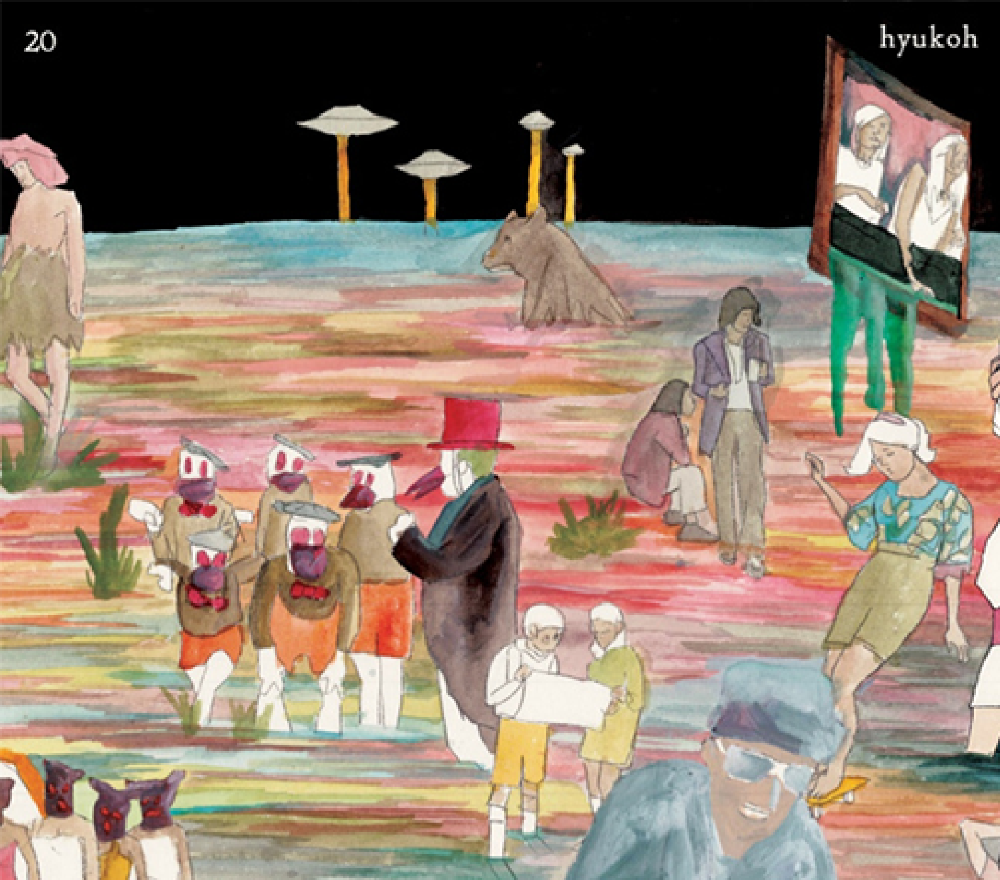
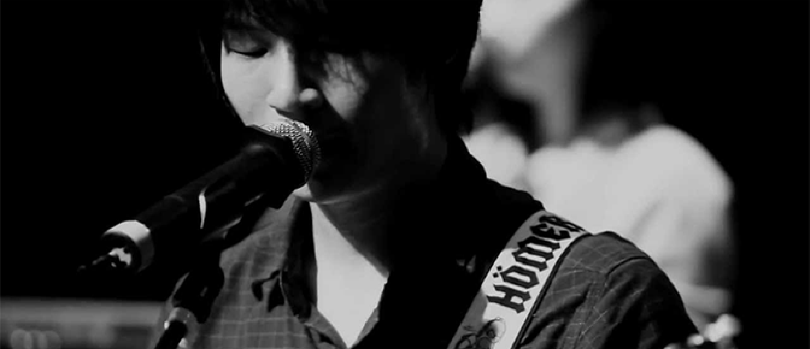
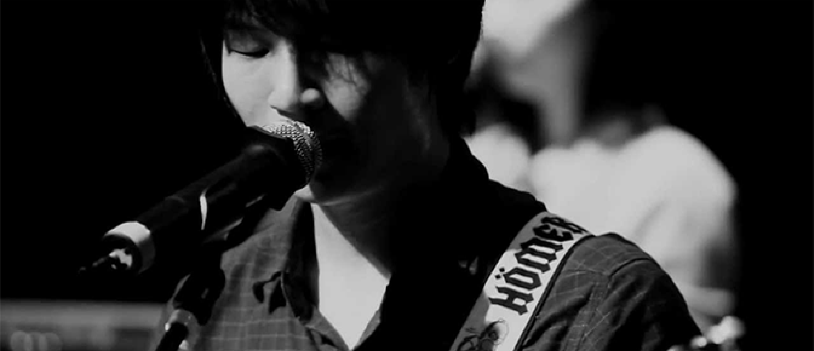

Look back in bitterness
going back to broken piece of past
staying in memories
hesitating stepping forward to real
I’m stupid wanderer
wandering poor fellow
give up now to live in the peace
that we made before
Ohio gentle wave
on ocean of recall
oh hi oh hi
I watch your pain
oh hi oh hi
the same as mine
Long story truly short
rewind it ever over again
hard to fine the rest
world without you never can stand
I’m stupid blind old man
deny suck a bright light
give up glow to live in the peace
that we made before
Ohio gentle wave
on ocean of recall
oh hi oh hi
I watch your pain
oh hi oh hi
the same as mine
Take me from your breath
let me down to back to real
I’ll erase you
set me free from you
know it’s hard to try
oh hi oh hi
I watch your pain
oh hi oh hi
the same as mine

아침 - pathethic sight
면허를 딴 지 얼마 안된 녀석의 차에 무작정 올라타 떠난 길의 도착점은,
마치 거대한 스크린 같은 한 여름의 붐비는 밤의, 해수욕장
술 기운에 용기를 얻어내어 바다에 취해있는 여자아이들에게 말을 걸어보기도 하고 그러면서
우리의 웃음소리가 상영되던 그 바다
등 뒤까지 쫓아 온 헤어짐의 그림자는
일정하게 쪼개진 시계바늘의 초침 사이로
가슴 아프도록 치열했던 나날들
거품같이 부셔진 추억들은 모래사장에 남긴 채-
그날 우리가 바다에 버렸던 수 많은 말과 마음들이 지금쯤 파도가 되어 그 바다에 돌아와 있진 않을까
등 뒤까지 쫓아 온 헤어짐의 그림자는
일정하게 쪼개진 시계바늘의 초침 사이로
가슴 아프도록 치열했던 나날들
거품같이 부셔진 추억들은 모래사장에 남긴 채-


 
